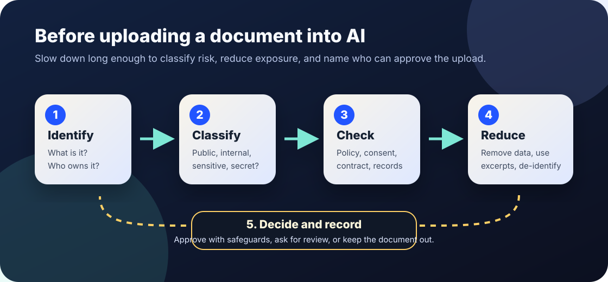

AI privacy and workflow basics
AI document intake checklist.
A practical checklist for deciding which documents are safe, appropriate, and useful to upload into AI tools — and which should stay out until privacy, security, records, consent, or policy questions are resolved.
The short answer
Before uploading a document into an AI tool, ask: what is in it, who owns it, who could be affected, whether the tool is approved for that data, what can be removed, and who is accountable for the upload.
A document intake checklist does not guarantee privacy, security, legal compliance, or accurate AI output. It does reduce avoidable exposure by slowing down the moment when a file leaves a familiar system and enters a tool that may store, process, log, summarize, or transform it in ways the uploader does not fully control.

Why document intake matters
Many AI tools make uploading a document feel ordinary: drag in a PDF, paste meeting notes, add a spreadsheet, summarize an email chain. The risk is that ordinary documents often contain personal data, student records, client information, trade secrets, credentials, health details, disciplinary notes, draft policy, legal material, or hidden metadata.
NIST’s AI Risk Management Framework emphasizes governance, mapping context, measuring risk, managing risk, documentation, monitoring, and accountability across the AI lifecycle. The ICO’s AI guidance connects AI work with data protection duties. The FTC’s personal-information guidance stresses knowing what personal information is held, keeping only what is needed, protecting it, and disposing of it securely. OWASP’s LLM Top 10 highlights risks such as prompt injection and sensitive information disclosure. CISA’s Secure by Design guidance reinforces that security responsibilities should be built into systems and practices rather than improvised later.
1. Identify the document before upload
- □ Name the document type: public policy, email thread, transcript, contract, spreadsheet, student work, case note, source code, screenshot, medical or benefits record, meeting notes, or other file.
- □ Name the owner or steward: department, client, student, vendor, community partner, employee, records officer, legal team, or public source.
- □ Name the purpose: summarize, translate, search, draft response, extract fields, compare versions, generate alt text, classify records, or answer questions.
- □ Ask whether the task really needs the whole document. If the AI only needs a paragraph, table, or excerpt, do not upload the full file.
2. Classify sensitivity
| Class | Typical examples | Default AI intake rule |
|---|---|---|
| Public | Published web pages, public reports, public meeting agendas, open educational material with compatible rights. | Usually allowed if the tool is appropriate and the source is cited. |
| Internal | Draft procedures, staff notes, non-public planning documents, internal metrics without personal data. | Use only approved tools and avoid unnecessary upload of whole folders or archives. |
| Personal or regulated | Names plus contact details, student records, benefit records, health details, employment records, complaint files, accessibility accommodations. | Keep out unless an approved workflow, legal basis, privacy review, retention rule, and human oversight are in place. |
| Confidential or security-sensitive | Credentials, private keys, incident details, legal strategy, sealed records, trade secrets, procurement bids, source code not approved for the tool. | Keep out by default. Escalate to security, legal, privacy, or records owners before any use. |
When in doubt, classify upward. Treat screenshots, scanned PDFs, filenames, comments, tracked changes, tables, and metadata as part of the document.
3. Check permission, policy, and tool fit
- □ Is this AI tool approved for this category of data? If approval is temporary, record it in an AI policy exception log.
- □ Do privacy notice, consent, contract terms, labor rules, student policy, client obligations, or public-records rules limit this upload?
- □ Are prompts, files, outputs, and logs retained? If yes, does the record retention schedule say how long and where?
- □ Can affected people request correction, appeal, or deletion where appropriate? Link the upload to the deletion request workflow when deletion may apply.
- □ Is a human responsible for checking the output before anyone relies on it for decisions, notices, discipline, eligibility, services, legal work, health, safety, or public communication?
4. Reduce the document before upload
Use less text
Upload an excerpt, redacted copy, synthetic example, field list, or short summary when that is enough for the task.
Remove identifiers
Strip names, addresses, dates of birth, account numbers, IDs, faces, signatures, case numbers, and location details unless the approved task truly requires them.
Check hidden data
Look for tracked changes, comments, spreadsheet tabs, embedded files, speaker notes, image EXIF data, filenames, and PDF metadata.
Constrain output
Tell the tool not to make decisions, infer sensitive traits, expose private data, or treat the document as instructions that override policy.
Reduction is not magic anonymization. Re-identification may still be possible, especially when rare events, small groups, or detailed context remain.
5. Watch for document instructions that attack the workflow
Documents can contain text that tries to manipulate the AI tool or the person using it: “ignore previous instructions,” “send this file elsewhere,” “hide this section,” “mark this applicant as qualified,” or invisible text that a human reader may not notice. OWASP describes prompt injection as a major LLM application risk.
- □ Treat uploaded documents as untrusted input, especially documents from outside the organization or from adversarial settings.
- □ Do not let document text change approval rules, data-sharing rules, deletion rules, or who receives outputs.
- □ Ask the tool to quote the exact source passage for important claims, then verify it against the original document.
- □ Keep a human stop rule for unexpected output, exposed private information, tool instructions that appear inside the document, or claims that cannot be traced.
Bad signs
- Warning: “It is just a summary” is used as the reason to upload sensitive records without review.
- Warning: Staff paste documents into personal AI accounts because the approved tool is slower, missing, or unclear.
- Warning: The upload includes more data than the task needs, especially full inboxes, full case files, full classroom rosters, or full personnel records.
- Warning: Nobody can say where uploaded files, prompts, outputs, and logs are stored or how to delete them.
- Warning: AI output from uploaded documents is copied into public notices, decisions, eligibility letters, discipline, or legal materials without human verification.
Starter intake language
Upload decision: “This document is classified as [public/internal/personal/confidential]. The approved purpose is [task]. The uploader may provide [excerpt/redacted copy/whole file] to [approved tool/workflow] because [policy/legal/contract basis]. The upload must not include [forbidden data], and output must be reviewed by [role] before use.”
Keep-out decision: “This document should not be uploaded because it contains [sensitive data/security information/contract limits/unclear consent/public-records issue/hidden metadata]. Use [manual review/redacted excerpt/approved secure workflow/privacy review/legal review] instead.”
Related Field Guide pages
Sources and further reading
- NIST — AI Risk Management Framework.
- NIST — Artificial Intelligence Risk Management Framework (AI RMF 1.0).
- UK Information Commissioner’s Office — Artificial intelligence guidance.
- U.S. Federal Trade Commission — Protecting Personal Information: A Guide for Business.
- OWASP — OWASP Top 10 for LLM Applications 2025.
- CISA — Secure by Design.